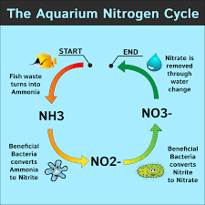

After finishing the initial installation of your tank, it's time to begin setting up your aquatic environment. The most crucial part of setting up your aquatic environment is getting your aquariums chemistry right. Without the correct chemical balance, your aquariums health will deteriorate and won't be able to sustain aquatic life. Don't be put off and think that you need a PHD, all you need to understand is the nitrogen cycle.
In this section we are going to detail how to cycle your aquatic environment in prperation for aquatic life. This involves initioating the nitrogen cycle without the use of aquatic life. For details on how to cycle with aquatic life already in your tank read the section below. To start the nitrogen cycle off, you'll need to introduce a source of ammonia into your aquatic environment. There are 2 approaches to this, the first of which is using a bottle of ammonia bought from a fish store. The second of the methods is to drop a tiny amount of fish food into your aquarium, this will break down and form the chemical, which is poisonous to fish, known as ammonia.
For the cycle to actually begin, you need your aquarium to measure at more than 3ppm of ammonia. To test this you will need an aquatic PH test strip, these can be purchased from most aquatic retailers. Once you've reached more than 3ppm of ammonia, you should slowly see the nitrites begin to show up when you test your water using a test strip. You want the nitrites in your tank to rise and after approximately a week, these should begin to drop back down and you'll notice that the nitrates begin to show up on the test strip. This means that the cycle is nearing its end, when both the nitrite and nitrate levels both return to 0 the cycle is completed and you have successfully set up a bacteria colony to help keep your aquatic chemistry in check. If your nitrate is still above 40ppm, you'll need to do some water changes to bring it back down. All in all, the cyle should take anywhere between 4-6 weeks to be completed successfully. Remember, you need ammonia to keep the chemical balance so you'll need to add some aquarium life.
If you have any problems or questions regarding a fishless cycle, please feel free to get in touch using the link at the bottom of the page.
Let us start by saying, this is not the preferred method of cycling your tank. Your aquatic life will be exposed to ammonia and nitrites during the process and a lot of delicate aquatic life won't be able to make it through the cycle. It runs a high risk of stressing your aquatic life which can cause disease. However, some species of aquatic life can handle it better than others. If you've made the mistake of buying your aquarium and aquatic life on the same day, this may be your only option.
Your aim with a Fish-In cycle is to populate your aquarium with hardy fish. This means that they will be able to survive the high levels of ammonia and nitrite long enough to allow for the beneficial bacteria colony to grow. You should add approximatley 1-2 hardy fish per 10 gallons of water. Adding too many fish will result in excess waste, in turn causing a large spike in your ammonia levels and will kill your aquatic life. A few recommended fish to use when cycling your tank include: Cherry or Tiger Barbs, Most species of Guppies, Zebra Danios and Most species of minnow.
Once you've added your chosen fish to your aquarium, you want to feed them sparingly during the nitrogen cycle. This is to avoid overfeeding as excess food can go rotten and cause and ammonia spike. As a general rule of thumb, you'll want to feed your fish once every 2 days, and only provide them with a medium sized meals. This stops your fish from producing excess waste, increasing the level of toxins in the tank before the beneficial bacteria colony has chance to grow.
While cycling your fish are being exposed to potentially lethal amounts of ammonia and nitrate, so doing regular water changes is a must! It will help to ensure the toxin levels don't get too high. Aim to do a 25% water change every 2-3 days, if you do them more frequently, you risk removing the ammonia and nitrite completely and these are essential for the benneficial bacteria colony to feed on.
Once the nitrogen cycle has begun, and it wil begin by itself when your fish produces waste, youll need to keep track of the level of the toxins in you aquarium. To test this you will need an aquatic PH test strip, these can be purchased from most aquatic retailers. Once you've reached more than 3ppm of ammonia, you should slowly see the nitrites begin to show up when you test your water using a test strip. Testing your water every day is recommended, but you can get away with testing every 2-3 days. You want the nitrites in your tank to rise and after approximately a week, these should begin to drop back down and you'll notice that the nitrates begin to show up on the test strip. This means that the cycle is nearing its end, when both the nitrite and nitrate levels both return to 0 the cycle is completed and you have successfully set up a bacteria colony to help keep your aquatic chemistry in check. If your nitrate is still above 40ppm, you'll need to do some water changes to bring it back down. All in all, the cyle should take anywhere between 4-6 weeks to be completed successfully.
Now that your toxin levels have returned to zero, you're ready to start adding more aquatic creatures to your aquarium. You'll need to do this gradually, only introducing 1 or 2 fish at a time as the extra waste from the new additions will cause stress on your benifical bacteria colonies. You need to allow the bacteria colonies time to grow and adjust to the extra strain to ensure that it doesn't cause an ammonia spike.
